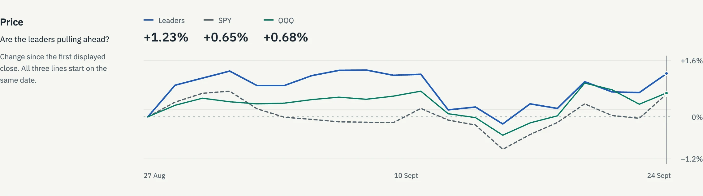
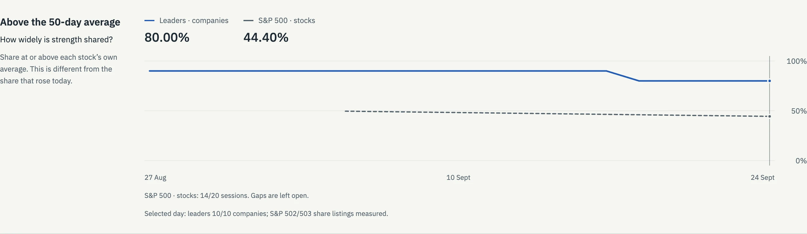
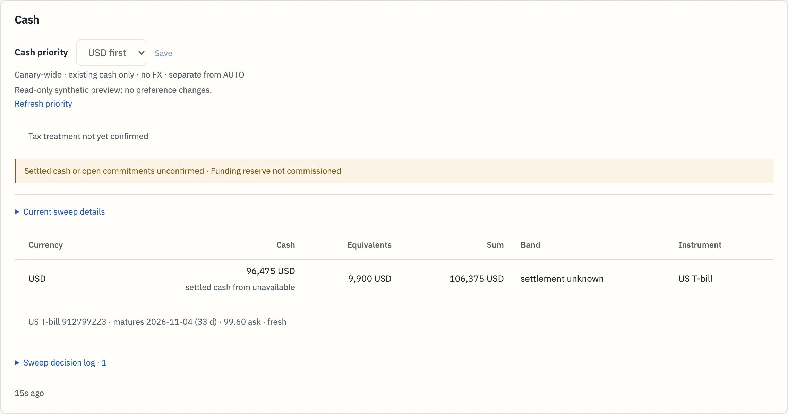
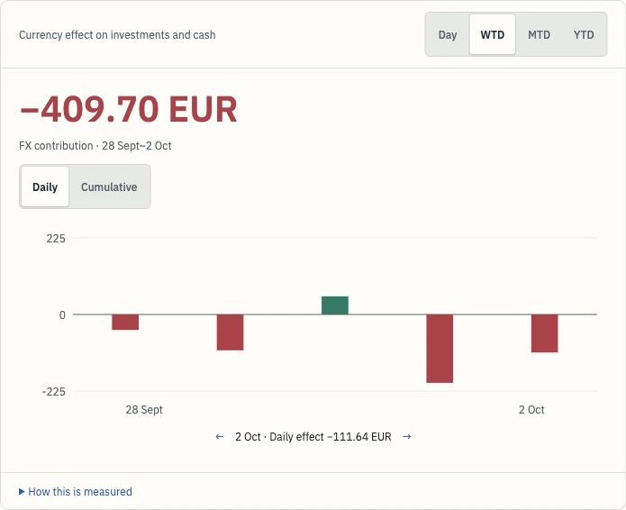

Before the open
A written brief each morning: how your book did the day before, and what needs your attention today.
Private workspace
Your portfolio, understood before the day begins and protected while you’re away. It places the orders you have pre-authorised, within limits you set, and asks you about everything else.
Discuss private access
Holdings, cash, margin and today’s priorities, with market context kept in view.
A written brief each morning: how your book did the day before, and what needs your attention today.
Your risk rules check the book whether you’re watching or not. When one trips, it drafts the fix: a stop, an exit or a budget cut. An unhedged book gets a flag, not a hedge.
Stops and loss exits you have pre-authorised go out on their own after a veto window, half an hour by default.
A policy-based sweep puts surplus cash into short-dated government bills in its own currency, with liquidity kept aside.
Market context · Remote access
Price, participation and trading activity share one timeline. Desk adapts to a phone browser; Canary’s paired app brings book reads and alerts.


Cash sweep
Put surplus cash into short-dated government bills in the currency you already hold. Keep cash for commitments, liquidity needs and your policy buffer.
Review the bill, maturity, price and fees. Confirm each order, or explicitly pre-authorise the sweep within your limits and a veto window.
Bills can lose value if sold before maturity.
Commitments, liquidity needs and your buffer come first.
Eligible cash buys short-dated government bills. No currency conversion.
Bills mature back to cash; a liquidity shortfall can prompt a sale. Sale proceeds must settle.
Every proposal keeps its reason and decision history. Missing evidence holds the sweep.

Portfolio performance
A foreign holding can rise while its currency pulls your P&L down. Performance → FX shows the currency contribution in your account’s base currency for the day, week, month and year to date.

Daily contributions reconcile to completed broker statements. The reporting cutoff and any missing days stay visible; incomplete periods have no total.
How FX is measuredFrom analysis to an order
Each proposal carries its sources and its reason. Stops, exits, budget cuts and the cash sweep can be pre-authorised. Everything else waits for your tap: send it now, or queue it for the open.
The AI analyst proposes but never sends. Every order passes Canary’s checks.

Full features
Under the hood
Canary CLI does the broker work: the connection, the evidence, the rules, the proposals and the checks every order passes. It is open source. Canary Desk adds the schedule, the AI analyst and the console on top.
An invitation
Built by a senior technology leader with decades of experience in financial services and software, and used daily on his own portfolio. For traders, small desks and family offices who want disciplined oversight of their book.
Product sheet
Three A4 pages: protection, the cash sweep, FX contribution and the full feature set.
Download the product sheetRuns on your Mac, with your Interactive Brokers account and your AI provider. Built on Canary CLI, its open-source engine. Access is arranged personally.